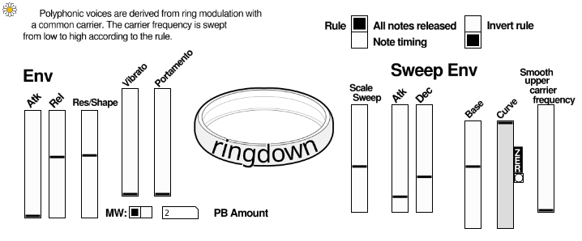
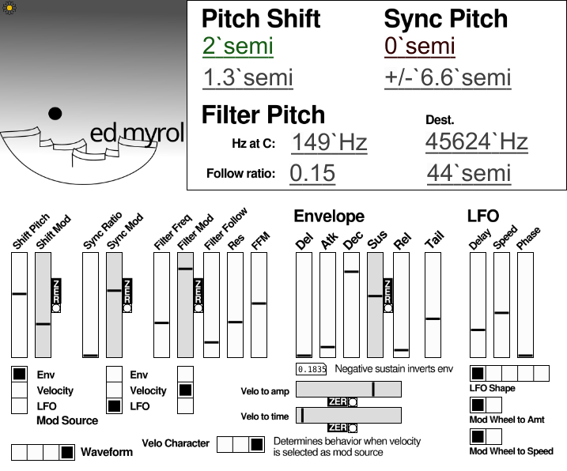
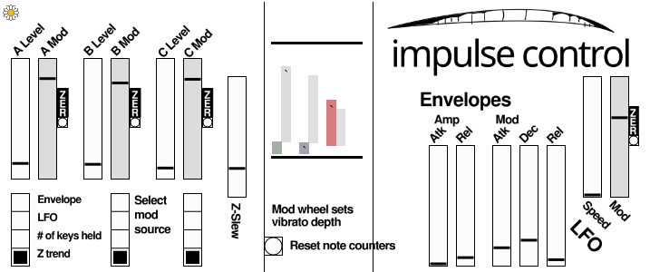

- Music/Sound:
- VSTs for you
- Ringdown, VST
- Ed Myrol, VST
- Impulse Control, VST
- Music software for you
- Bedtime, resonators
- Keytrails, pitched delay line
- Parody, PD analog mockery
- Music devices at home
- Duophonic guitar pickup
- Toy piano magnetic pickup
- Piano damper tricks
- Harmonizers
- Four string tunings
- Film Tech Archive:
- Motion film hand lab
- Infrared Viewer
- Vertical film drying rack
- Test strip printer
- Film tech small victories
- LED projector
- 16MM Framewise Transfer
- Photochemical
- Action camera color
- Blue reversal
- Carl:
- Show must've went on
- Contact
- Go home now
Ringdown
This is a brand new synthesis method!
When two sine waves are ring modulated together, the result is two tones whose frequencies are equal to the sum and difference of the input frequencies.
This synth places a carrier oscillator at an arbitrary frequency high above the notes that you play. Each voice is generated by ring modulating this oscillator by a sine wave whose frequency is halfway between the carrier frequency and the intended fundamental. The resulting tone is filtered to dampen frequencies generated above the fundamental.
The artifacts generated while sweeping the frequency of the carrier are amusing and sometimes lovely.
Download it here:
The synth itself was developed with the marvellous Pure Data by Miller Puckette: http://msp.ucsd.edu/ Pierre Guillot's Camomile allows Pure Data to be wrapped up and function as a vst: https://github.com/pierreguillot/Camomile
You can access the Pure Data patches by going into the VST folder on Windows or ctl-click 'Show Package Contents' on Macintosh. If you would like a linux version, let me know. It's within the scope of what Camomile can do and you can help me test it.
To top
Ed Myrol
Many digital synthesizers attempt to mimic analog systems while avoiding aliasing artifacts typical to basic digital interpretations of analog waveforms.
Ed Myrol avoids certain artifacts by producing only frequencies that are an exact number of audio samples long. This limitation produces notes that are not necessarily in tune. To bring the pitches back into line, each voice has a rudimentary delay-based pitch shifter.
This is a very silly way to avoid aliasing. It is CPU Intensive. Depending on the phase of the pitch shifter, the onset of notes can be delayed. The pitch shifters generate glitches and artifacts of their own, the intensity of which vary across the range of notes. The payoff for being patient with these issues is an unusual character of sound.
We’re used to the ugly artifacts of pitch shifters processing polyphonic material. It turns out that using a separate shifter to process each voice results in complementary and interesting artifacts. The character changes depending on the degree of shift. It’s interesting to set the pitch shift to an arbitrary value and compensate by transposing the midi input. Pitch modulation such as vibrato must target the shifters and so alters the character of the artifacts in time.
Consider Ed Myrol a bizarre alternative to virtual analog synthesis using oversampling or bandlimited oscillators.
Download it here:
The synth itself was developed with the marvellous Pure Data by Miller Puckette: http://msp.ucsd.edu/ Pierre Guillot's Camomile allows Pure Data to be wrapped up and function as a vst: https://github.com/pierreguillot/Camomile
You can access the Pure Data patches by going into the VST folder on Windows or ctl-click 'Show Package Contents' on Macintosh. If you would like a linux version, let me know. It's within the scope of what Camomile can do and you can help me test it.
To top
Impulse Control
Impulse control uses a sort of flanger system as a paraphonic filter. The flanger tone can be altered with standard modulations or follow trends in the MIDI input stream.
Download it here:
Impulse Control on Patch Storage
To top